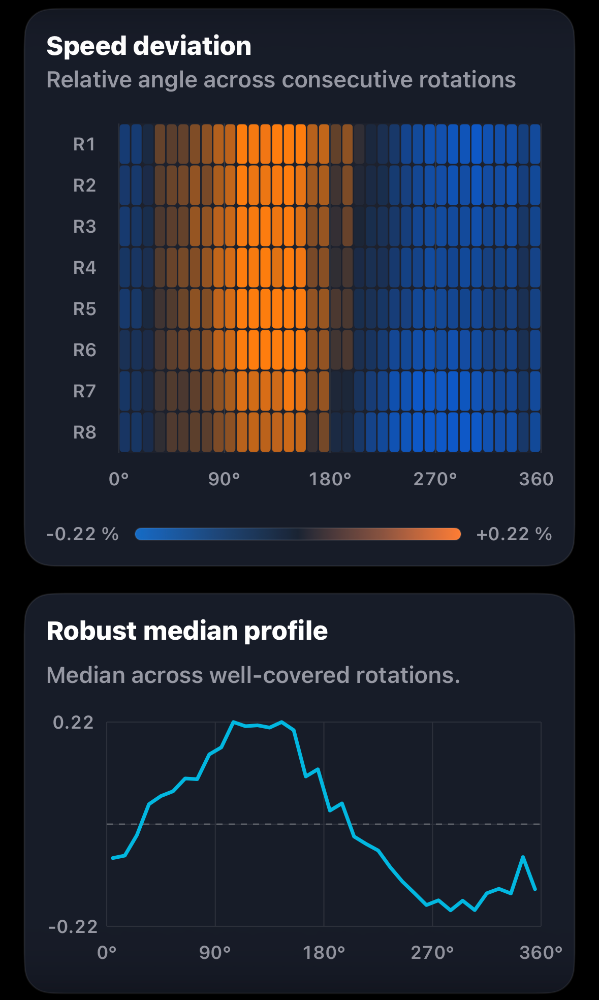
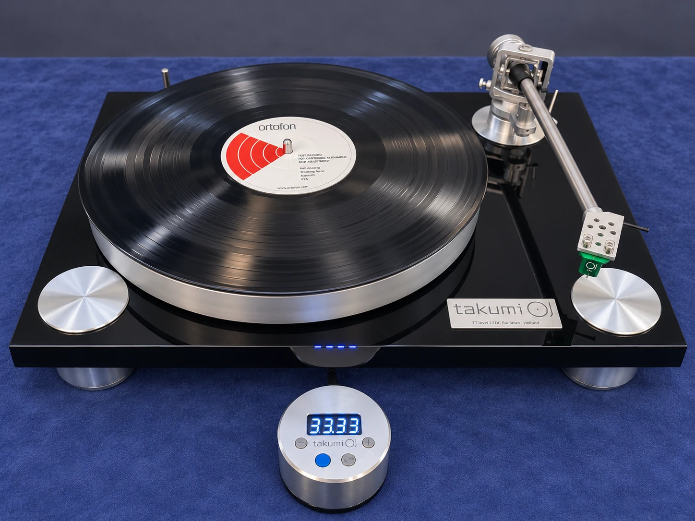
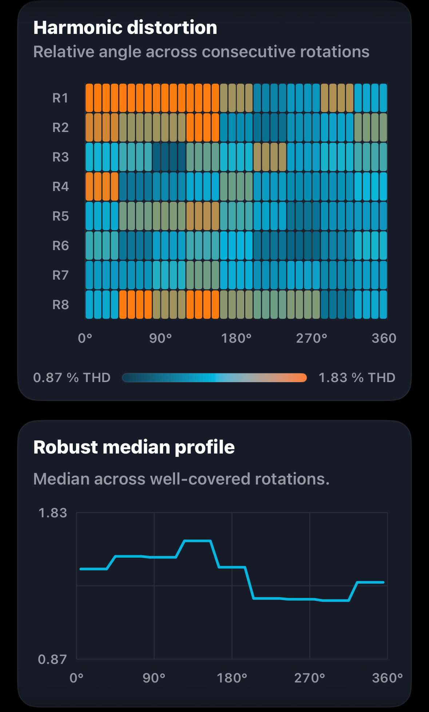
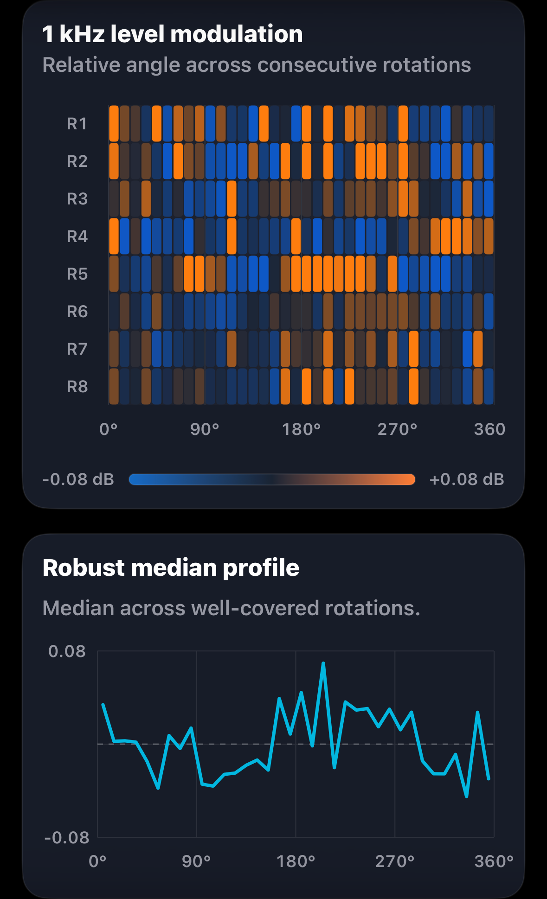

Speed deviation

Left channel selected

Groove Scope Studio · GS-2026-0015
The Takumi pairing on the Groove Scope Studio bench, with a 1 kHz reference check and fingerprints across eight turns.
Measurement at a glance
Michelangelo Canonico measured this system for Direct Sound Records on 7 November 2026. These figures come from the original report.
Rotation fingerprints
Each view pairs Groove Scope’s angular heatmap with its robust median profile. Choose L or R on each card. Channel assignments follow the supplied filenames.

Left channel selected

Left channel selected

Left channel selected

Left channel selected
Each plot shows eight revolutions on its own relative angular reference. On smaller screens, swipe to browse all four plots.
Measurement chain
The PDF title lists the TT Level 1.1. The measurer confirmed the tested deck was the TT Level 2.1 DC, which is identified by the badge in the supplied photograph.
Open technical record
The editorial review connects directly to the source report, structured record, checksums, measurement method and original asset archive.
Measurement results
The table preserves the report’s figures for playback speed, weighted and unweighted stability, channel behaviour and harmonic distortion.
| Metric | Measured result |
|---|---|
| Playback speed under stylus load | 33.33 RPM |
| Playback speed error | −0.00% vs 33⅓ RPM, as displayed |
| Settled speed range | 33.17–33.48 RPM |
| Settled speed span | 0.31 RPM |
| DIN-shaped wow & flutter RMS | 0.030% |
| Raw speed variation, unweighted RMS | ±0.207% |
| Raw speed variation, unweighted 2-sigma | ±0.413% |
| Raw wow, unweighted RMS | 0.129% |
| Raw flutter, unweighted RMS | 0.154% |
| Channel balance, L−R | +0.07 dB |
| Average channel separation at 1 kHz | 27.0 dB |
| Electrical crosstalk, L→R | −27.6 dB |
| Electrical crosstalk, R→L | −26.4 dB |
| Directional crosstalk difference | 1.22 dB |
| Total harmonic distortion | Left 1.19%, right 1.02% |
| THD difference, L−R | +0.18 percentage points |
| Second harmonic (H2) | Left −39.0 dB, right −41.1 dB |
| Third harmonic (H3) | Left −52.0 dB, right −51.3 dB |
| Fourth harmonic (H4) | Left −54.9 dB, right −52.7 dB |
| Fifth harmonic (H5) | Left −57.4 dB, right −55.7 dB |
| H2 difference summary | Left 2.0 dB higher |
| H3 difference summary | Right 0.8 dB higher |
Report note. The raw capture level was low. The report treats the speed result as usable and flags crosstalk and harmonic readings as potentially noise-limited. The right channel’s overall distortion varied most during the capture.
The table preserves the precision of the reported channel readings and their differences.